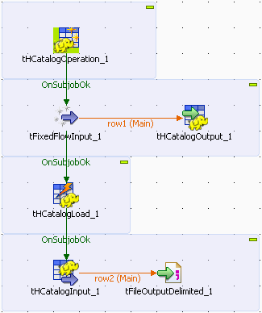
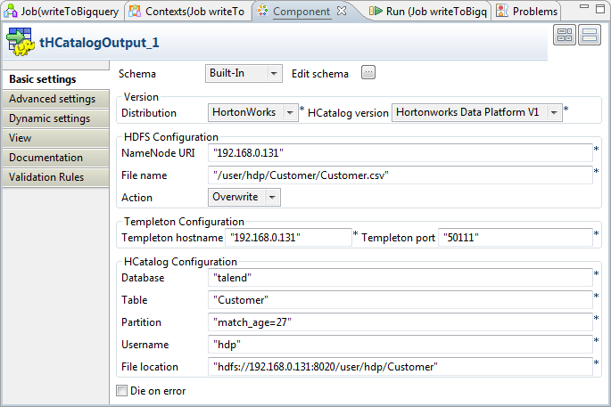
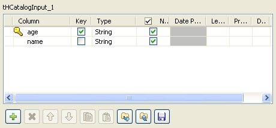

![[Warning]](../images/warning.png) | |
This component will be available in the Palette of the studio on the condition that you have subscribed to the relevant edition of Talend Enterprise Data Integration Big Data edition. |
|
Component family |
Big Data / HCatalog | ||||
|
Function |
This component allows you to manage the data stored in HCatalog managed database/table/partition in HDFS. | ||||
|
Purpose |
The tHCatalogOperation component offers a platform on which you can operate in HCatalog managed database/table/partition in HDFS. | ||||
|
Basic settings |
Schema and Edit Schema |
A schema is a row description, i.e., it defines the number of fields that will be processed and passed on to the next component. The schema is either Built-in or stored remotely in the Repository. | |||
|
|
|
Built-in: The schema will be created and stored locally for this component only. Related topic: see Talend Enterprise Studio User Guide. | |||
|
|
|
Repository: The schema already exists and is stored in the Repository, hence can be reused in various projects and Job designs. Related topic: see Talend Enterprise Studio User Guide. | |||
|
HCatalog version |
Select the version of the Hadoop distribution you are using from the drop-down list. | ||||
|
|
Templeton hostname |
Fill this field with the URL of Templeton Webservice.
| |||
|
|
Templeton port |
Fill this field with the port of URL of Templeton Webservice. By default, the value for this field is 50111.
| |||
|
|
Operation on |
Select an object from the list for the DB operation as follows: Database: The HCatalog managed database in HDFS. Table: The HCatalog managed table in HDFS. Partition: The partition specified by the user. | |||
|
|
Operation |
Select an action from the list for the DB operation as follows: Create/Drop/Drop if exist/Drop and create/Drop if exist and create. For further information about the DB operation in HDFS, see https://cwiki.apache.org/Hive/languagemanual-ddl.html. | |||
| Create the table only it doesn't exist already |
Select this check box to avoid creating duplicate table when you create a table.
| ||||
|
|
Database |
Fill this field with the name of the database in which the HCatalog managed tables are placed. | |||
|
|
Table |
Fill this field to operate on one or multiple tables in a database or on a specified HDFS location.
| |||
|
|
Partition |
Fill this field to specify one or more partitions for the partition operation on a specified table. When you specify multiple partitions, use comma to separate every two partitions and use double quotation marks to quote the partition string.
| |||
| Username |
Fill this field with the username for the DB authentication. | ||||
|
|
Database location |
Fill this field with the location of the database file in HDFS.
| |||
|
|
Database description |
The description for the database to be created.
| |||
| Create an external table |
Select this field to create an external table in an alternative path defined in the Set HDFS location field in the Advanced settings view. For further information about creating external table, see https://cwiki.apache.org/Hive/languagemanual-ddl.html#LanguageManualDDL-CreateTable.
| ||||
| Format |
Select a file format from the list to specify the format of the external table you want to create: TEXTFILE: Plain text files. RCFILE: Record Columnar files. For further information about RCFILE, see http://hive.apache.org/docs/r0.4.0/api/org/apache/hadoop/hive/ql/io/RCFile.html.
| ||||
| Set partitions |
Select this check box to set the partition schema by clicking the Edit schema to the right of Set partitions check box. The partition schema is either built-in or remote in the Repository.
| ||||
|
|
|
Built-in: The schema will be created and stored locally for this component only. Related topic: see Talend Enterprise Studio User Guide. | |||
|
|
|
Repository: The schema already exists and is stored in the Repository, hence can be reused in various projects and Job designs. Related topic: see Talend Enterprise Studio User Guide. | |||
| Set the user group to use |
Select this check box to specify the user group.
| ||||
| Option |
Select a clause when you drop a database.
| ||||
| Set the permissions to use |
Select this check box to specify the permissions needed by the operation you select from the Operation list.
| ||||
| Set File location |
Fill this field to specify a path to which partitioned data is stored.
| ||||
|
|
Die on error |
This check box is cleared by default, meaning to skip the row on error and to complete the process for error-free rows. | |||
| Advanced settings | Comment |
Fill this field with the comment for the table you want to create.
| |||
| Set HDFS location |
Select this check box to specify an HDFS location to which the table you want to create is saved. Deselect it to save the table you want to create in the warehouse directory defined in the key hive.metastore.warehouse.dir in Hive configuration file hive-site.xml.
| ||||
| Set row format(terminated by) |
Select this check box to use and define the row formats when you want to create a table: Field: Select this check box to use Field as the row format. The default value for this field is "\u0001". You can also specify a customized char in this field. Collection Item: Select this check box to use Collection Item as the row format. The default value for this field is "\u0002". You can also specify a customized char in this field. Map Key: Select this check box to use Map Key as the row format. The default value for this field is "\u0003". You can also specify a customized char in this field. Line: Select this check box to use Line as the row format. The default value for this field is "\n". You can also specify a customized char in this field.
| ||||
| Properties |
Click [+] to add one or more lines to define table properties. The table properties allow you to tag the table definition with your own metadata key/value pairs. Make sure that values in both Key row and Value row must be quoted in double quotation marks.
| ||||
| Retrieve the HCatalog logs | Select this check box to retrieve log files generated during HCatalog operations. | ||||
| Standard Output Folder |
Fill this field with the path to which log files are stored.
| ||||
|
Error Output Folder |
Fill this field with the path to which error log files are stored.
| ||||
|
tStatCatcher Statistics |
Select this check box to gather the Job processing metadata at the Job level as well as at each component level. | ||||
|
Usage |
This component is commonly used in a single-component Job or used together with a subjob. | ||||
|
Limitation |
Knowledge of Hive Data Definition Language and HCatalog Data Definition Language is required. For further information about Hive Data Definition Language, see https://cwiki.apache.org/confluence/display/Hive/LanguageManual+DDL. For further information about HCatalog Data Definition Language, see https://cwiki.apache.org/confluence/display/HCATALOG/Design+Document+-+Java+APIs+for+HCatalog+DDL+Commands. | ||||
This scenario describes a six-component Job that includes the common operations for the HCatalog table management on Hortonworks Data Platform. Sub-sections in this scenario covers DB operations including:
Creating a table to the database in HDFS;
Writing data to the HCatalog managed table;
Writing data to the partitioned table using tHCatalogLoad;
Reading data from the HCatalog managed table;
Outputting the data read from the table in HDFS.
![[Note]](../images/note.png) | |
Knowledge of Hive Data Definition Language and HCatalog Data Definition Language is required. For further information about Hive Data Definition Language, see https://cwiki.apache.org/confluence/display/Hive/LanguageManual+DDL. For further information about HCatalog Data Definition Language, see https://cwiki.apache.org/confluence/display/HCATALOG/Design+Document+-+Java+APIs+for+HCatalog+DDL+Commands. |
Drop the following components from the Palette to the design workspace: tHCatalogOperation, tHCatalogLoad, tHCatalogInput, tHCatalogOutput, tFixedFlowInput, and tFileOutputDelimited.
Right-click tHCatalogOperation to connect it to tFixedFlowInput component using a Trigger>OnSubjobOk connection.
Right-click tFixedFlowInput to connect it to tHCatalogOutput using a Row > Main connection.
Right-click tFixedFlowInput to connect it to tHCatalogLoad using a Trigger > OnSubjobOk connection.
Right-click tHCatalogLoad to connect it to the tHCatalogInput component using a Trigger > OnSubjobOk connection.
Right-click tHCatalogInput to connect it to tFileOutputDelimited using a Row > Main connection.
Double-click tHCatalogOperation to open its Basic settings view.

Click Edit schema to define the schema for the table to be created.

Click [+] to add at least one column to the schema and click OK when you finish setting the schema. In this scenario, the columns added to the schema are: name, country and age.
Fill the Templeton hostname field with URL of the Templeton webservice you are using. In this scenario, fill this field with "192.168.0.131".
Fill the Templeton port field with the port for Templeton hostname. By default, the value for this field is "50111"
Select Table from the Operation on list and Drop if exist and create from the Operation list to create a table in HDFS.
Fill the Database field with an existing database name in HDFS. In this scenario, the database name is "talend".
Fill the Table field with the name of the table to be created. In this scenario, the table name is "Customer".
Fill the Username field with the username for the DB authentication.
Select the Set the user group to use check box to specify the user group. The default user group is "root", you need to specify the value for this field according to real practice.
Select the Set the permissions to use check box to specify the user permission. The default value for this field is "rwxrwxr-x".
Select the Set partitions check box to enable the partition schema.
Click the Edit schema button next to the Set partitions check box to define the partition schema.
Click [+] to add one column to the schema and click OK when you finish setting the schema. In this scenario, the column added to the partition schema is: match_age.
Double-click tFixedFlowInput to open its Basic settings view.

Click Edit schema to define a same schema as the one you defined in tHCatalogOperation.
Fill the Number of rows field with integer 8.
Select Use Inline Table in the Mode area.
Click [+] to add new lines in the inline table.
Double-click tHCatalogOutput to open its Basic settings view.
Click Sync columns to retrieve the schema defined in the preceding component.
Fill the NameNode URI field with the URI to the NameNode. In this scenario, this URL is "192.168.0.131".
Fill the File name field with the HDFS location of the file you write data to. In this scenario, the file location is "/user/hdp/Customer/Customer.csv".
Select Overwrite from the Action list.
Fill the Templeton hostname field with URL of the Templeton webservice you are using. In this scenario, fill this field with "192.168.0.131".
Fill the Templeton port field with the port for Templeton hostname. By default, the value for this field is "50111"
Fill the Database field, the Table field, the Username field with the same value you specified in tHCatalogOperation.
Fill the Partition field with "match_age=27".
Fill the File location field with the HDFS location to which the table will be saved. In this example, use "hdfs://192.168.0.131:8020/user/hdp/Customer".
Double-click tHCatalogLoad to open its Basic settings view.

Fill the Partition field with "match_age=26".
Do the rest of the settings in the same way as configuring tHCatalogOperation.
Double-click tHCatalogInput to open its Basic settings view.

Click Edit schema to define the schema of the table to be read from the database.
Click [+] to add at least one column to the schema. In this scenario, the columns added to the schema are age and name.
Fill the Partition field with "match_age=26".
Do the rest of the settings in the same way as configuring tHCatalogOperation.
Double-click tLogRow to open its Basic settings view.

Click Sync columns to retrieve the schema defined in the preceding component.
Select Table from the Mode area.
Press CTRL+S to save your Job and F6 to execute it.

The data of the restricted table read from the HDFS is displayed onto the console.
Type in http://talend-hdp:50075/browseDirectory.jsp?dir=/user/hdp/Customer&namenodeInfoPort=50070 to the address bar of your browser to view the table you created:

Click the Customer.csv link to view the content of the table you created.